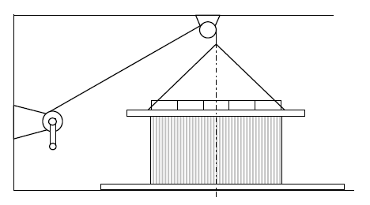
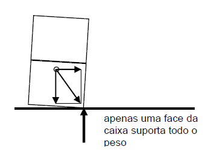

Dimensionamento estrutural
Caráter experimental do projeto estrutural
O projeto estrutural (e das proteções, que veremos adiante) é, essencialmente experimental. São os testes, normalizados ou de campo, que permitem a comparação e otimização de alternativas, que indicarão se um projeto é ou não adequado. Há muitos casos, porém, em que não há como fazer o desenvolvimento experimental, especialmente com embalagens logísticas de produtos não seriados ou que não possam ser submetidos a testes, por seu valor, por exemplo. O caráter experimental do projeto, então, vem da experiência acumulada na produção da tecnologia, do cálculo, aplicando conhecimentos da resistência de estruturas e materiais. Geralmente é difícil aplicar conceitos teóricos de projeto estrutural com materiais como a madeira ou o papelão. A NBR 7190:1997, por exemplo, define toda uma metodologia de dimensionamento de estruturas de madeira, baseada em critérios probabilísticos de estados limite. A complexidade da estrutura da embalagem de madeira, porém, com seus elementos de ligação e irregularidades do material, acaba exigindo um fator de segurança elevado, de 6 a 8, envolvendo um grande “fator de ignorância”. Mas como são embalagens não seriadas, não há um grande problema no superdimensionamento. É fundamental, neste caso, a experiência com práticas semelhantes, mas é bom não confiar totalmente naquele “carpinteiro que tem 40 anos de prática”, sem uma análise crítica do projeto, por engenheiro capacitado.
Com caixas de papelão ocorre o mesmo, mas os fabricantes têm uma prática mais sistematizada, uniforme. Ainda assim, podem usar fatores de segurança insuficientes, seja por falta de informação sobre os esforços previsíveis, seja por pressão da minimização de preço. Pode haver, aqui, uma discussão sobre a questão da responsabilidade, se é de quem fornece a caixa ou do comprador que a especifica, no caso de um colapso no empilhamento, por exemplo. Mas essa discussão fugiria do enfoque técnico que estamos visando. Não tenho, além disso, conhecimento jurídico para entrar nessa discussão.
Resistência ao empilhamento
Compressão
A determinação da resistência ao empilhamento é o problema mais comum de dimensionamento estrutural da embalagem. O colapso das caixas por compressão, e portanto o colapso da pilha, é causa das mais comuns de avarias em transporte e armazenamento.
Como saber se a embalagem tem a resistência necessária? Como dimensionar a estrutura para que ela tenha essa resistência? Em primeiro lugar, qual é a resistência necessária? Ela dependerá da altura de empilhamento, em transporte e em condições estáticas. Dependerá da severidade das condições de transporte e armazenamento: acelerações; umidade; duração; número de movimentações que podem afetar a integridade da estrutura; qualidade do empilhamento quanto à linearidade; cargas localizadas, como as aplicadas pelo palete superposto; estiva da carga; etc.. São tantas as variáveis, e tão imprevisíveis, que o normal é se trabalhar com um fator de segurança. Assim, a resistência E da caixa a ser especificada no teste de compressão estática deverá ser correspondente ao peso que será suportado, multiplicado por um fator de segurança. Se o peso de cada caixa é P, o número de camadas de empilhamento é n, o fator de segurança é s, a resistência da caixa deve ser R:
O fator de segurança pode ser estimado em função da severidade prevista das condições. Para um empilhamento em transporte, deve ser de, no mínimo, 2. Se a embalagem for de papelão, no mínimo 3. Em condições mais severas, o fator pode chegar a 6, ou até 8, dependendo também do valor do produto embalado e do custo de reposição. Em exportação, em contêiner, o mais recomendável é usar fator de segurança 8. A ASTM D4169 estabelece fatores de segurança 10 para nível de segurança I, 7 para nível II e 5 para III.
Incrivelmente, a norma da ONU para embalagem de produtos perigosos estabelece uma verificação da resistência R, sem qualquer fator de segurança. Isto cria condições inseguras de transporte, exatamente para produtos perigosos. Discutimos e estudamos cuidadosamente esse problema na ABNT ao ser feita a norma brasileira e ao tentarmos contribuir para a elaboração da regulamentação da ANTT. Na norma brasileira NBR 11564:2002 foi introduzido um fator de segurança, mas a Resolução 420/04 da ANTT manteve o erro da ONU (erro que a própria ONU evitou ao estabelecer um fator de segurança 1,8 na norma de contentores para produtos perigosos, fator ainda muito baixo).
O fator de segurança deve estar relacionado às diferenças entre as condições admissíveis da realidade do transporte e armazenamento e as condições normalizadas para teste ou ensaio da resistência da embalagem. Num teste verifica-se, num ensaio mede-se. O teste de compressão simples da embalagem nada mais é que a colocação de um peso determinado, com área plana de apoio, com seu centro de gravidade centrado sobre a embalagem, aplicado sem impacto. As condições de ambiente para o teste devem ser de 65% de umidade relativa e 23°C, no caso de embalagens de material celulósico. O teste é normalizado pela NBR 9475.

Eventualmente, o carregamento de teste pode ser descentrado, se visa simular uma condição de empilhamento com centro de gravidade deslocado.
Outra forma de controlar a resistência da embalagem é o ensaio de compressão dinamométrica. Utiliza-se uma prensa dinamométrica na qual a embalagem é colocada e sujeita a uma deformação em velocidade constante, traçando-se a curva força x deformação. Este ensaio é normalizado pela ISO 12048, pela ASTM D642-00(2005) e pela TAPPI T804. A ABNT o normaliza apenas para caixas de papelão (NBR 6739:1980).
Como o teste é mais próximo da realidade que o ensaio, usa-se para o ensaio um fator de segurança maior. Tem-se, assim, formas de determinar e controlar a resistência da embalagem à compressão simples.
Estabilidade
O empilhamento, porém, não precisa ter apenas resistência à compressão: é preciso ter também estabilidade, principalmente no transporte, quando as solicitações horizontais são significativas (acelerações de frenagem e de balanço do caminhão e de engate de vagões, principalmente). Para verificação da resistência e estabilidade das embalagens é usado o teste de compressão com cisalhamento, conforme a norma IPT-NEA 04 MT (que coincide com norma da JIS). A resistência de engradados, principalmente, deve ser verificada por esse método. É aplicada, por esse método, uma carga horizontal de 10% da de compressão, o que é muito pouco se lembrarmos que as acelerações horizontais podem chegar a 0,8G.

A estabilidade de unidades de carga, com a verificação, principalmente, da fixação ao palete e da eficiência de amarrações, cintamentos ou envolvimentos com filme plástico, pode ser determinada por meio de testes de prensa queda rotacional (IPT-NEA 02 MT) ou de oscilação horizontal (IPT-NEA 08 MT), sendo o último recomendável para simular o transporte ferroviário.
Pode ser usado dispositivo para simulação de frenagem de caminhão com cargas empilhadas.

Esse dispositivo é simples, no entanto, não reproduz exatamente a frenagem do caminhão, que tem um pulso de aceleração em dente de serra com pico terminal, e não senoidal como em sistemas elásticos. Pode ser desenvolvido um sistema que freie o carrinho na rampa, que seria mais realista, em lugar do sistema elástico.

Note-se que uma frenagem de apenas 0,5G pode mais que duplicar a compressão da caixa inferior da pilha, pois só uma parede suportaria o peso.
Para evitar isso, as pilhas devem ser agrupadas em unidades de carga e pressionadas entre si por plastificação ou cintamento, garantindo o atrito entre as caixas, ou encostadas à extremidade da carroceria ou contêiner.

Outra situação de compressão que a embalagem pode encontrar é a de carga concentrada. Ocorre, principalmente, por ter a embalagem que suportar pessoas andando sobre ela. Usa-se a norma IPT-NEA 10 MT (baseada em norma AFNOR), correspondente à NBR 9465:1986. É aplicada uma carga de 90daN em uma área circular com diâmetro de 10cm, e verifica-se (é um teste) se a embalagem suporta ou não, sem dano ao produto (aquele vidro, que não serve para nada, sobre o fogão, é vítima usual desse teste e da situação real).
Algumas embalagens podem ter que suportar compressão lateral, como as que são movimentadas por side clamps. Não há, no entanto, alguma norma que permita o controle dessa resistência.
Resistência ao levantamento
Um dos problemas frequentes que ocorrem com embalagens logísticas é sua falha em operações de levantamento, seja manual, seja mecanizado, por garfo ou içamento. Esse problema é tão comum e grave que é estranho não haver, nas normas internacionais ou de outros países, nenhum método para verificação da resistência estrutural da embalagem nestas operações. Há método da norma da ONU para contentores de produtos perigosos que estabelece um teste de içamento e outro de apoio sobre garfo, com sobrecarga de 25%. A norma IPT-NEA 05 MT, correspondente à NBR 9476:1986, estabelece uma simulação do levantamento com fator de segurança 1,5. Verifica-se, por exemplo, se as alças destinadas ao manuseio têm resistência suficiente, ou se o fundo da caixa se abre ao esta ser levantada (o que é um acidente comum). No içamento, verifica-se a resistência dos pontos de passagem de cabos.
Resistência à pressão interna
Algumas embalagens devem suportar uma pressão interna, particularmente quando devem conter líquidos ou gases, mas também pós ou grãos, ou peças soltas. No caso de gases, tem-se vasos de pressão, que não serão tratados aqui. A norma da ONU para embalagens de produtos perigosos pode ser aplicada. No caso de líquidos essa norma estabelece testes com um fator de segurança 1,5 sobre a pressão interna que teriam, com determinada substância, a 55°C. A norma fala em “pressão de vapor” do líquido, o que é diferente da pressão interna na embalagem que contém, além do vapor do líquido, ar e vapor d’água, como normalmente ocorre. Não estabelece, porém, o método para a determinação da pressão de vapor, o que levou à definição, na discussão da NBR 11564:2002, de um método que prevê que o espaço de gás sobre o líquido também contenha ar, de forma a se ter melhor correspondência com a realidade. No caso dos produtos perigosos do Grupo de Risco I, os mais perigosos admissíveis no transporte, a pressão interna de teste deve ser de 250kPa. É admitido, em tais testes, que a embalagem se deforme, mas não vaze. Um outro teste é exigido por essa norma, chamado de “estanqueidade”, com pressão interna bem menor, onde se supõe que a embalagem não deva sofrer alteração. Sem essa suposição, não teria sentido tal teste em pressão menor, mas a norma não é explícita a respeito.
Resistência ao vácuo externo
Um teste que se faz, no IPT por exemplo, principalmente em embalagens que terão transporte aéreo, é o de colocá-la em uma câmara de vácuo. Verifica-se se há vazamento, se há ruptura, abertura de tampas, etc., em decorrência da diferença entre as pressões interna e externa. Esse teste segue normas da IATA, ou da ISO (2873), ou da ASTM para o transporte aéreo, ou a IPT-NEA 012.
Resistência ao vácuo interno
Alguns tambores, ou latas grandes, de paredes mais finas, podem sofrer colapso por pressão externa ao serem transportados de um local alto para o nível do mar. O teste de vácuo interno permite verificar a resistência da estrutura da embalagem a essa solicitação.
Tambores de aço que recebem o produto aquecido e são fechados sob alta temperatura sofrerão uma variação grande de pressão interna quando forem para um ambiente frio. O vácuo interno pode implodir o tambor. Isso se agrava se houver uma redução de altitude.
Resistência à quedas
Tambores e outras embalagens para líquidos não podem apresentar vazamento após um teste de queda. Geralmente, o problema não é a resistência da embalagem, mas a proteção que ela oferece ao produto numa queda, que será tratada adiante, em Dimensionamento das proteções. Convém, até mesmo, que a embalagem não seja resistente à queda, sofrendo amassamento ou quebra que absorva parte da energia de impacto, reduzindo a aceleração de choque do produto embalado. Esse amassamento ou quebra é interessante também por evidenciar que houve um impacto, levando a uma inspeção mais cuidadosa no recebimento da carga. O próprio desenho da embalagem, intencionalmente, pode favorecer essa quebra, como no exemplo da figura.

Resistência à impactos localizados
Muitas embalagens devem ser capazes de suportar um impacto localizado sem permitir que este seja transmitido ao produto embalado. A própria resistência do material da embalagem à perfuração e o desenho que assegure um distanciamento entre o produto e a parede da caixa podem dar essa proteção contra impactos. A norma IPT-NEA 09 MT, correspondente à NBR 9464:1986, baseada em norma AFNOR, permite a verificação experimental desse comportamento por meio de um pêndulo com ponta normalizada (triortogonal) que impacta a embalagem com energia de 15J.

Embalagens de produtos como geladeiras e fogões, que não podem sofrer pequenas punções ou amassamentos localizados, são as mais submetidas a esse teste.
Tambores, especialmente os de fibra, também são testados com esse tipo de impacto, com ponta cônica, para verificar se o suportam sem vazamento.
Embalagens de produtos infecciosos são obrigatoriamente submetidas a teste de perfuração, pela norma da ONU, com ponta esférica ou cilíndrica.
Resistência à vibração e choques repetitivos
A embalagem, especialmente por seus sistemas de acolchoamentos ou calços, deve proteger o produto contra vibrações, como veremos adiante, mas ela própria deve ter certa resistência. Um caso típico é o da resistência do fundo de tambores de aço à fadiga (ou plastificação alternada) em esforços de flexão cíclica. Têm sido registrados casos de ruptura com vazamento do conteúdo de tambores de 200 litros e em latas de 20 litros.
Um teste em mesa vibratória permite a verificação da qualidade do desenho (ausência de dobras vivas e pontos de concentração de tensões, por exemplo) e do material (aço acalmado, por exemplo) de forma a evitar-se a fadiga.
Deve ser lembrado que os choques repetitivos, como os que ocorrem na traseira do caminhão, podem comprometer a resistência da embalagem ao empilhamento. As oscilações horizontais também forçam as caixas de baixo das pilhas. Foi visto, acima, que se usa um fator de segurança no dimensionamento da resistência à compressão, que leva em conta, inclusive, tais condições. Quando tratamos de Condições físicas da distribuição física — Condições físicas normalizadas, apresentamos as normas para os testes de vibração e impacto repetitivo.
Para a análise de comportamento da embalagem ou unidade de carga em condições dinâmicas é comum realizar o teste de campo. Há casos em que um laboratório de embalagem não é disponível, ou a embalagem não cabe na mesa vibratória, então o teste de campo é a única alternativa viável. Este deve ser instrumentado com acelerômetros, sempre que possível, para que se tenha um registro das acelerações efetivamente aplicadas à embalagens testadas. O ideal é que as diversas alternativas de embalagem sejam testadas simultaneamente, em igualdade de condições. Não colocar, por exemplo, as caixas mais resistentes em baixo e as menos resistentes em cima, pois então não teríamos uma comparação com igualdade de alturas de empilhamento.
O teste de campo da embalagem pode ser associado ao teste de mercado, com a remessa de lotes piloto e o acompanhamento por pesquisadores do mercado, em um âmbito representativo mas isolado, de maneira que eventual resultado negativo não prejudique a imagem do produto.
Ângulo de tombamento ou instabilidade
Embalagens muito estreitas em relação à altura, ou que tenham o centro de gravidade muito alto em relação à largura de apoio, podem tombar com facilidade. É interessante que se conheça esse ângulo em que se inicia um tombamento, seja no manuseio, seja pela aceleração de frenagem no transporte, ou acelerações devidas a curvas ou irregularidades na estrada. Embalagens que tendam a tombar com facilidade devem ser amarradas formando conjuntos mais largos, ou amarradas ao equipamento de transporte.
O teste para determinação do ângulo crítico é muito simples. Pode-se usar uma chapa rígida onde se coloca a embalagem e que possa se elevada por um lado, por uma talha ou empilhadeira, até que a base da caixa comece a levantar, ameaçando um tombamento. É claro que medidas de segurança são necessárias. Mede-se, então esse ângulo limite.
Esse ângulo também pode ser determinado por meio de cálculo quando se sabe a altura do centro de gravidade da embalagem. Antes que ocorra o tombamento pode ocorrer um deslizamento, e esse ângulo de deslizamento também é importante para os estudos de estabilidade.
Resistência da embalagem ao fogo
Embalagens de explosivos têm que resistir, por um certo tempo, à exposição ao fogo em condição normalizada pelo Orange Book da ONU. Mede-se o tempo desde o ateamento do fogo até a explosão. Este ensaio é usado, por exemplo, em embalagens de munição, realizado em campos de prova próprios, como o da CBC e o Laboratório de Detônica do IPT.
Especificação de desempenho ou de material
No controle da qualidade de desenvolvimento da embalagem deve-se trabalhar com especificações de desempenho, isto é, de comportamento no cumprimento das funções. Todos esses testes aqui citados visam isso. A embalagem, com seu protótipo ou série piloto aprovada nos testes laboratoriais ou de campo, passa pela fase de desenvolvimento e comparação de alternativas (como vimos ao tratar da Minimização de custos) No fim desse processo de desenvolvimento tem-se que estabelecer uma especificação de fornecimento, com uma metodologia de controle da qualidade de recebimento. Do lado do fabricante da embalagem, uma metodologia de controle da qualidade de produção.
Os métodos de verificação ou avaliação do desempenho não são facilmente aplicáveis a estes outros controles da qualidade. Alguns testes, que exigem mesa vibratória, ou câmara climática, ou de vácuo, não são viáveis no controle industrial, dado o custo dos equipamentos e a demora nos procedimentos. São apenas para desenvolvimento ou certificação de conformidade. É necessário, então, que sejam definidos testes e ensaios com equipamentos mais simples e procedimentos rápidos, portanto o controle se faz sobre os materiais da embalagem. Para isso, a embalagem aprovada no processo de desenvolvimento deve passar por uma caracterização de seu material, sendo identificadas e medidas as propriedades significativas, relevantes, desse material. É muito comum que sejam especificadas propriedades do material que nada têm a ver com o desempenho da embalagem, como a gramatura do papelão, por exemplo. Ao tratarmos dos materiais veremos quais são as propriedades significativas, que devem ser controladas.
Essa questão da validade do método de ensaio de materiais deve ser discutida como um problema sociológico. Durante muitas décadas, desde 1920, o ensaio usual para controle da qualidade de papelão era o ensaio de arrebentamento (que será descrito adiante). Foi proposto, como Rule 41, pela entidade representativa das ferrovias norte-americanas (UFC), provavelmente quando a principal embalagem transportada era sacaria. O fato é que esse ensaio nada tem a ver com o que se espera de desempenho de uma caixa de papelão. Mesmo sabendo disso, a indústria não adotava método mais condizente, simplesmente por tradição. E enfrentar essa tradição, realmente estúpida, era terrível para os pesquisadores que buscavam alguma racionalidade. Hoje há uma tendência de se substituir esse método pelo ensaio de coluna de papelão (descrito e analisado adiante).
Hoje se verifica igual resistência ao uso do método de determinação da rigidez do papelão, sendo este método muito melhor correlacionado com o desempenho da caixa em compressão, ou empilhamento, e pressão interna.